Klejtrup
Höhe ü. d. Erde: 128 cm
insgesamt: 165 cm
Größte Breite: 87 cm
Größte Dicke: 34 cm
Runenhöhe: 12-15 cm
Runeninschrift:
... und nach Amundi,
seinem Enkel


40 - Klejtrup - Letztes Update 24.08.2025
Listennummer : DR kein / DK MJy 33
Navidaten: 56.60397 9.64679 oder: Søvej 44, 9500 Hobro
Transliteration: : auk : ift : ąmunta : | : sunaR : sun : sin :
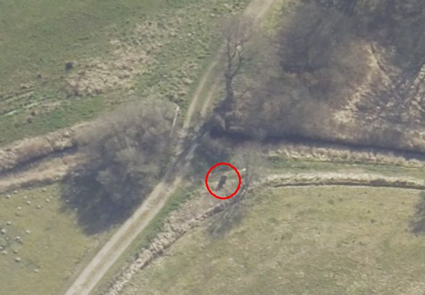
Das ist ein Luftfoto vom 18.04.2023 von Skråfoto - Lizenz: CC BY 4.0 - das den Standort des Runensteins - rot eingekreist - im freien Feld zeigt. Skråfoto ist eine Webanwendung, die von Klimadatastyrelsen weltweit kostenlos bereitgestellt wird. Die Aufnahmen werden alle zwei Jahre erneuert und neben einer Senkrechtaufnahme wird ein Schrägbild aus jeder Himmelsrichtung angeboten, das man über eine Adresssuche aufrufen kann.
Durch den Landwirt Carl Vestergaard (2. Foto) (*22.03.1919 - 20.01.2005) und seine Knechte wurde im Mai 1978 ein unbewirtschaftetes Wiesengrundstück, nördlich vom Klejtrup See, 10 km westlich von Hobro, gepflügt. An einer Stelle lagen einige Steine im Weg, wobei sich die kleineren einfach entfernen ließen. Aber einer war sehr groß und verlangte einen anstrengenden Einsatz. Als dieser Stein umgekippt wurde, kam eine Runeninschrift zum Vorschein, die glücklicherweise nicht unbeachtet blieb. Am 05. Mai 1978 wandte er sich nach dem Fund an das Viborg Stiftsmuseum.
Die Inschrift, die von den Runologen Marie Stoklund (1934-2021, Runologin am dänischen Nationalmuseum) und Erik Moltke (*04.04.1901 - 19.10.1984, Runologe, Historiker) gedeutet wurde, ist merkwürdig. Sie lautet: und nach Amundi, seinem Enkel.
Ein Halbsatz also, aber es stand niemals mehr auf diesem Stein. Die Erklärung hierfür muss sein, dass der erste Teil der Inschrift auf einem anderen Stein gehauen gewesen sein muss. Etwas vergleichbares kennt man von den Jarlebank Steinen in der schwedischen Gemeinde Täby / Uppland, aber nicht - in jedem Fall nicht mit Sicherheit - von anderen dänischen Runensteinen.
Åmunds Opa hat also einen Stein erstellt, vielleicht für einen verstorbenen Sohn, und als der Sohnessohn verstarb, war es sein Wunsch den Text zu erweitern. Es war wohl kein Platz mehr auf dem ersten Stein, weshalb hierfür ein zweiter Stein gesetzt wurde. Dies muss, den Runenformen nach zu urteilen, am Ende des 9. Jahrhunderts geschehen sein (970 - 1020). Die Inschrift verläuft in zwei senkrechten Linien. Sie beginnt in der rechten Linie von unten nach oben und in dem linken Runenband von oben nach unten.
Durch Recherchen nach dem Fund ergab sich, dass der Stein bis 1942 wasserbedeckt im See lag und ihn wohl niemand bemerkt hat. Im genannten Jahr wurde die Seeoberfläche aber um 60 cm gesenkt, was nicht problematisch war, da das Wasser künstlich gestaut war, um eine Wassermühle - Klejtrup Mühle (erstmals 1380 erwähnt) - zu betreiben.
Der erste Eindruck zum Fundzeitpunkt war, dass der Stein an seiner ursprünglichern Stelle lag und nur umgekippt war. Diese Theorie ist aber durch eine spätere Ausgrabung, die vom Viborg Stiftsmuseum an dieser Stelle durchgeführt worden ist, widerlegt worden.
Die geologische Untersuchung, die gleichzeitig stattfand, zeigte, dass die erste Wasserstandssteigerung (erster Mühlenstau) in der Zeit um 1000 - 1150 erfolgt sein muss. Der Runenstein ist wahrscheinlich im Jahre 1100 hierher gekommen und in jedem Fall, nachdem das Gebiet wasserbedeckt war. Die Theorie der Ausgrabung ist, dass der Stein vielleicht beim Transport über das Eis, vielleicht um - wie so viele andere Runensteine - als Baumaterial für die Kirche im dortigen Gebiet verwendet zu werden, durch das Eis brach und dort liegen blieb.
Aber wo kann der Stein und sein Gegenstück gestanden haben? Wahrscheinlich unweit der Fundstelle. Der Transport großer Steine ist mühevoll gewesen, weshalb man ihn meistens vermied. Dazu kommt, dass die topographischen Verhältnisse an dieser Stelle sehr gut für die Platzierung eines Runensteines geeignet waren. Ganz in der Nähe der Fundstelle kreuzt der Weg einen Wasserlauf, nämlich den Klejtrup Bach, der dort seinen Auslauf in den See hat. Der Weg, der heute unbedeutend ist, war früher ein sehr belebter; ein nahegelegener Bauernhof war früher ein Straßenkrug. Es war gang und gebe, dass Runensteine an den Straßen aufgestellt wurden, speziell an Stellen, an denen der Weg einen Bachlauf durch eine Watstelle oder Brücke passierte. Hier wurden sie von vielen Menschen gesehen, und das war ja gerade auch ihr Zweck. So kann der Klejtrup Stein und sein Gegenstück entweder Seite an Seite, oder einander gegenüber auf jeder Straßenseite gestanden haben.
Die Suche nach dem Gegenstück in der Umgebung verlief bislang ergebnislos. In einer örtlichen Sage findet sich jedoch ein interessanter Hinweis. Diese Sage wurde 1854 von Rasmus Henrik Kruse (*07.08.1796 - 30.05.1877, Landschaftsmaler - link-LIVES - Heirat 21.12.1851)
 Bildquelle:
Det Kgl. Biblioteks billedsamling
- Lizenz:
Public Domain
Bildquelle:
Det Kgl. Biblioteks billedsamling
- Lizenz:
Public Domain
einem kulturhistorisch sehr angesehener Mann aufgeschrieben, der sie an Svend Hersleb Grundtvig (*09.09.1824 - 14.07.1883, Literaturwissenschaftler und Volkskundler - link-LIVES)
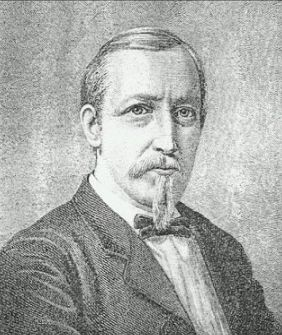
Bildquelle: Wikipedia - Lizenz: Public Domain
sandte, der seinerseits Volkssagen sammelte und veröffentlichte. In der Sage heißt es:
Auf der westlichen Seite des Sees (Klejtrup See) hat bis vor wenigen Jahren ein Stein gelegen, auf dem eine Menge Schrift mit großen Buchstaben, die keiner lesen konnte, war und auf dem öfters eine Kerze brannte. Einige junge Kerle im Ort bekamen an einem Abend die Idee an dem Stein zu graben, weil sie meinten dort einen Schatz zu finden. Sie kamen auch soweit, dass sie eine Brechstange unter dem Stein ansetzten, aber zur gleichen Zeit hatten sie das Gefühl, dass die Straße die vorbeiging, von Reisenden wimmelte und aus lauter Respekt vor dem Unbekannten, verschoben sie ihr Vorhaben auf ein anderes Mal. Am zweiten Tag, als sie ihr Vorhaben fortsetzen wollten, war der Stein verschwunden und war nicht mehr aufzufinden.
Die Beschreibung des Steins passt gut auf einen Runenstein aber der Klejtrup Stein selbst kann es nicht gewesen sein, da er zur fraglichen Zeit bereits sicher unter der Seeoberfläche an seinem späteren Fundort verborgen lag. Möglicherweise beinhaltet diese Sage also die Bestätigung für den zweiten Runenstein.
Der Klejtrup Stein steht heute an der Nordseite des Sees im freien Gelände und ist schwer zu finden, da keinerlei Hinweise auf seinen Standort aufgestellt wurden. Wenn man die Landstraße (Søvej) von Klejtrup in Richtung Fristrup fährt, muss man rechts in den Feldweg abbiegen, der zu den Bauernhöfen mit den Hausnummern 42-44 führt - durch kleine blaue Schilder gekennzeichnet - hier Google StreetView Screenshot vom 15.02.2025.
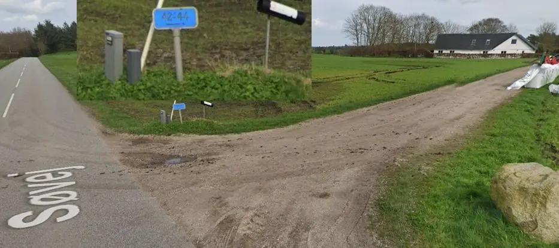
Dieser Weg führt über eine längere Strecke unbefestigten Weges bis an eine kleine Brücke, an der sich ein weißes Geländer befindet. Unmittelbar vor dieser Brücke steht der Runenstein auf der rechten Seite - siehe nebenstehender Link zu einem Kartenausschnitt 1:25000 - und hier:
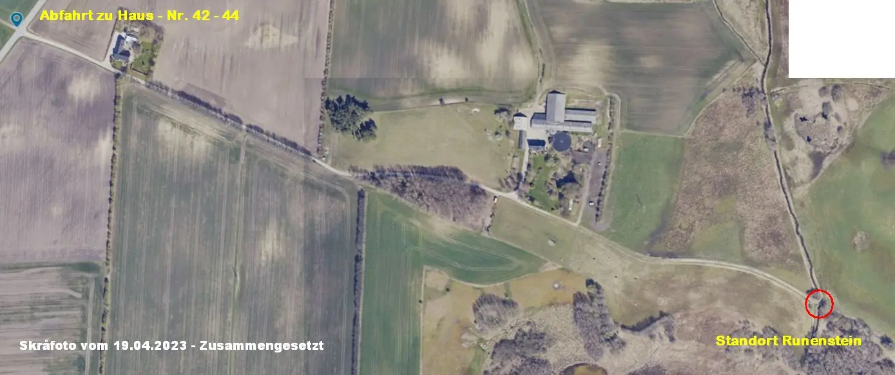
Skråfoto - Lizenz: CC BY 4.0 - Zufahrt zum Standort des Runensteins - rot eingekreist - im freien Feld - eingefügt am 15.02.2025. Aus zwei Senkrechtluftfotos zusammengefügt.
Im "Viborg Folkeblad" war am 04.07.2013 eine Meldung zu lesen, wonach der Runenstein umgefallen, mit der Inschrift nach oben liegend, schon um den 25.10.2012 an seinem Standort durch Lisbeth M. Imer (*1973, Runologin am Nationalmuseum Kopenhagen) und Robert Fortuna (Fotograf), als sie im Zuge der Bestandsaufnahme der einzelnen Runensteine vor Ort kamen, gefunden wurde. Danach entbrannte eine Diskussion darüber, woher Gelder zur Instandsetzung aufgetrieben werden könnten, da wie überall die zur Denkmalpflege zur Verfügung stehenden Mittel bereits verplant waren. Am 14.02.2014 fand sich in der Zeitung ein weiterer Artikel zu dem Thema mit der (übersetzten) Überschrift: "Experte schlägt Alarm wegen Klejtrup-Stein". Da lag der ca. 2 Tonnen schwere Runenstein noch immer mit der Inschrift nach oben im Feld und über Regen und Eis wurde eine Schädigung des Steins befürchtet. Schon am 21.02.2014 wurde in der Zeitung verkündet, dass der Stein jetzt doch alsbald wieder aufgerichtet werden könne, was dann auch einer Meldung vom 04.04.2014 zufolge einigermaßen zeitnah geschah. Dafür sei auch der privaten Initiative von Kristian Nørskov gedankt, der in der Nähe von Klejtrup wohnt und die "Bjerregrav Maskinstation" betreibt. Er hatte bereits im Oktober 2012 seine Hilfe angeboten, was aber zunächst abgelehnt wurde. Dann durfte er doch noch mit einem Radlader bei der Aufrichtung des Runensteins behilflich sein. Laut Lisbeth M. Imer konnte man dessen Hilfe nicht einfach annehmen, da ein Runenstein der dänischen Kulturbehörde gehört. Durch sie wurde diese Behörde über den umgefallenen Runenstein in Kenntnis gesetzt und deren Entscheidung musste eben erst abgewartet werden. Zuviel Bürokratismus für so eine einfache Angelegenheit, die in einer Stunde erledigt war, meinte er dazu. Recht hatte er!
Im Rahmen meiner 2022er Jütland Wikinger Tour war ich am Samstag, 04.06.2022, vor Ort. Zunächst habe ich die Inschriftseite des Runensteins mit Wasser und einer Bürste leicht gereinigt. Daneben findet sich ein Foto als der Stein nahezu abgetrocknet war. Die Streifen auf der Steinrückseite sind nur Wasser. Die Infotafel ist gegenüber 2016 fast nicht mehr lesbar, weshalb ich heute - 17.12.2022 - mal das Foto mit einer E-Mail an das "Dänisches Amt für Naturverwaltung im Ministerium für Umwelt und Lebensmittel", das Aufgaben in Wäldern, Naturgebieten und entlang der Küsten Dänemark wahrnimmt, zur Info geschickt. Vielleicht findet der Hinweis Anklang und sich in irgendeinem Topf Geld für so ein Vorhaben. Rückmeldung bekam ich allerdings keine (Stand 05.11.2024)
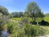 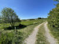 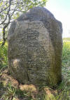 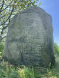 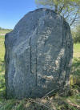 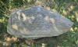 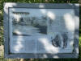


Davor hatte ich erstmals am Dienstag, 21.08.1990, den Weg zu diesem Runenstein gefunden. Das Foto im linken Frame zeugt davon. Es zeigt aber auch, dass die Runeninschrift im Laufe der Jahre durch Wind und Wetter schwer gelitten hat, da sie bei normalen Lichtverhältnissen nur noch schwer erkennbar ist. Damals war sie auch farblich ausgestaltet worden. Dies wäre sicher kein Schaden für den Stein, wenn sich die Verantwortlichen erneut dazu durchringen könnten, und würde den (wenigen) Besuchern auch mehr bieten.
Fotos von meiner 2016er Wikinger-Tour - Freitag, 26. August 2016, habe ich hier:
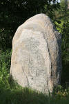 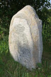 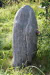 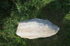


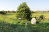 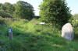 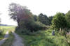 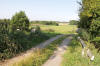 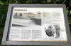


Durch Erik Moltke (*04.04.1901 - 19.10.1984, Runologe, Historiker)
 Bildquelle: Scan von Buchumschlag "Runerne i Danmark og ders
oprindelse" - Erik Moltke - 1976 - Lizenz:
CC-BY-SA
Bildquelle: Scan von Buchumschlag "Runerne i Danmark og ders
oprindelse" - Erik Moltke - 1976 - Lizenz:
CC-BY-SA
wurde diese sw Fotografie des Runensteins im Jahr 1978 wenige Tage nach seiner Entdeckung aufgenommen.
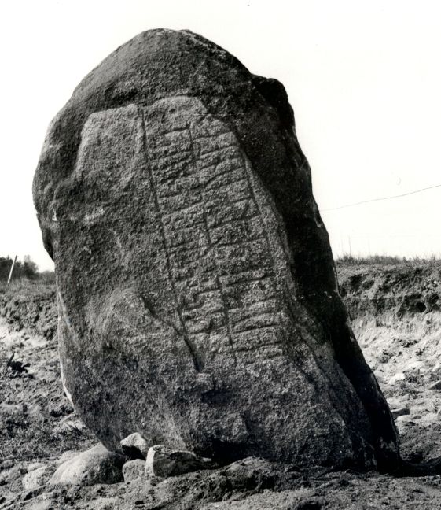
Quelle: Digitale Sammlung des Nationalmuseums in Kopenhagen - Lizenz: CC-BY-SA
Im Vorfeld zu dem 2016 erschienenen Buch von Lisbeth M. Imer (*1973, Runologin am Nationalmuseum Kopenhagen) "Danmarks Runesten - en fortælling" reiste sie mit dem Fotografen Roberto Fortuna zur Bestandsaufnahme durch die Lande. Dieser hat die Runensteine meist abends bei Dunkelheit mit Schräglicht aufgenommen und darüber wirklich herausragende Fotos erzielt. Diese Aufnahme ist aus dem 10.11.2014.
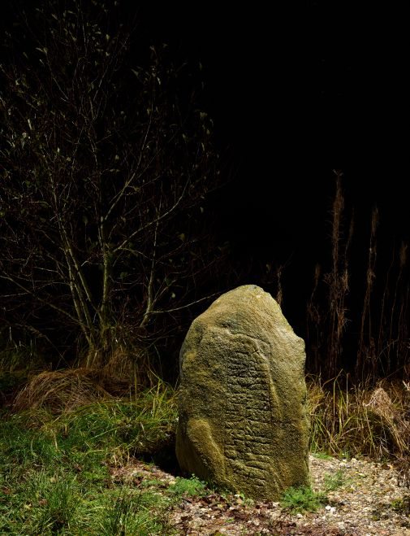
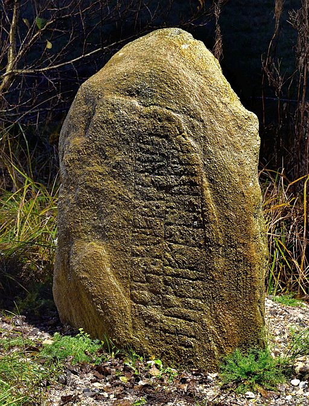
Quelle: Digitale Sammlung des Nationalmuseums in Kopenhagen - Lizenz: CC-BY-SA - rechtes Bild von mir zugeschnitten (17.12.2022)
Den Eintrag zu diesem Runenstein aus der dänischen Runen Datenbank im Internet kann man hier abrufen. Diese beiden Fotos finden sich auf dieser Seite:
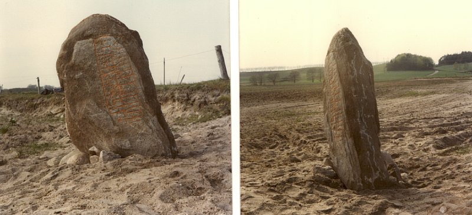
Lizenz: CC-BY-SADie Informationen in "Fund og Fortidsminder" zu dem Runenstein finden sich hier. Darin ist inzwischen dieser Zustandsbericht des Steinrestaurators Leif Vognsen aus dem Jahr 2018 eingebettet.
Über diesen Link finden sich zu dem Runenstein Informationen des Forschungsprojektes "Runes" der Akademie der Wissenschaften zu Göttingen.
Einen Bericht zu einer Ausgrabung "Udgravning ved Klejtrup Bæk" zwischen dem 11. und 16.10.2019 findet sich im Internet an dieser Stelle.
Über diesen Link findet sich eine weitere Abhandlung, die den Runenstein, neben der "Klejtrup Mühle", zum Thema hat (Scan des Artikels "- Og efter Åmund", SKALK, 1990, Nr. 5, S. 13-15).
Literaturhinweise:
Runestenen ved Klejtrup sø - Marie Stoklund und Erik Moltke - S. 56-57 - MIV (Museerne i Viborg amt), 8, 1978
SKALK - 1978 - Nr. 4 - S. 16-17 - Mette Iversen - Bedstefars sten / Skalk 1978:4
På vej til kirke? - Mette Iversen - S. 56-65 - MIV (Museerne i Viborg amt), 13, 1985
SKALK - 1990 - Nr. 5 - S. 13-15 - Carsten Sønderby - "- og efter Åmund"
Fra Runesten til Runesten i Midtjylland - Mette Iversen - Viborg Stiftsmuseum 2000 - 29. Klejtrup stenen - S. 44-46